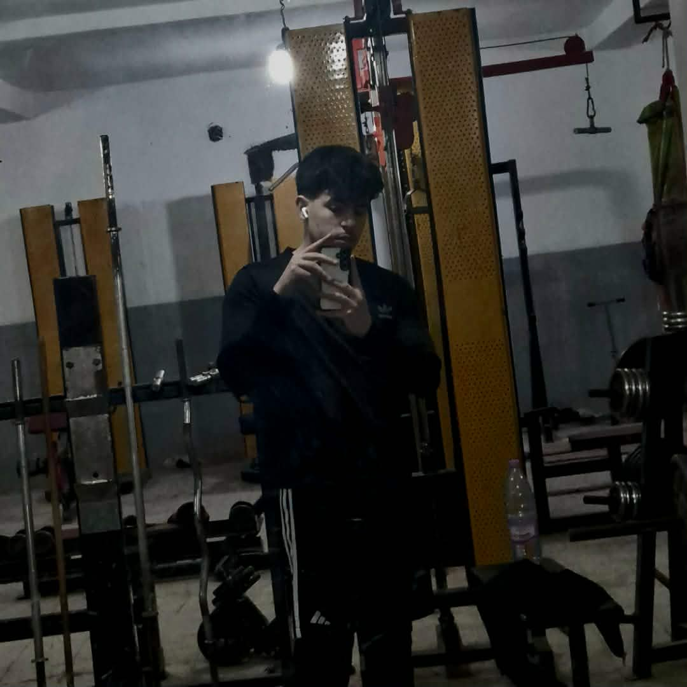

WASATA-DZ PLATFORM
المنصة الموثوقة لوسطاء البيع والشراء
Benbadra Ahmed
متخصص شحن كوينز ووساطة eFootball
Facebook Profile

Wail Ben Gochei
وسيط معتمد - خدمات رقمية
Facebook Profile
Ahmed Berk
وسيط حسابات وألعاب
Facebook Profile
Seif Din Blkhal
وسيط صفقات تجارية
Facebook Profile